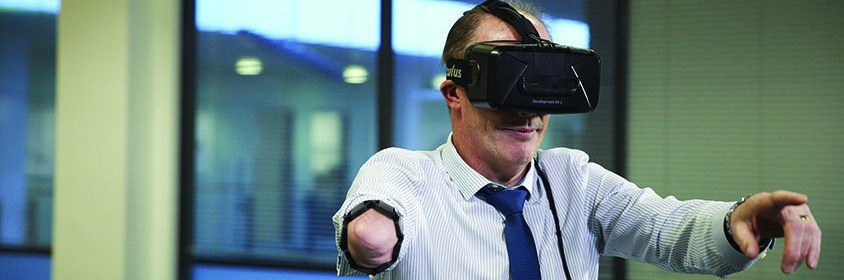

For an upper-limb extremity amputee to be eligible for a robotic prosthetic, there are benchmarks in muscular control, strength, and stamina that they must first achieve. Traditional practice in this type of rehabilitation is often arhcaic, and as a result many amputees are unfortunately ineligible for robotic prosthetics, or unable to retain control of them long term. Because of this, our group in the Lab for Interactive Computer Systems is developing technology to amplify the effectiveness of amputee rehabilitation. The games and experiences that we create are controlled by the myoelectric signals from muscles in the user's affected limb. Read with novel sensors, the type of contraction or muscular action being taken can be identified and translated into real-time inputs.
Research shows that user engagement is an enormous factor in sucessful rehabilitation. My challenge is to provide amputees with engaging, immersive experiences which simulate robotic prosthesis. I've done extensive work storyboarding and understanding the experience of an amputee at all stages of their rehab, and have tapped my engineering background in conjunction with market research to gain insights into the form and function of modern, commercial prosthetics. Deep knowledge in these areas helps inform my work.
I'm constantly wireframing with our software engineers, and integrating feedback from our medical industry partners. As the scope of our project evolves, I've been given the responsibility to bring new students in to the group; in this process, we've placed emphasis on diversifying skillsets and creating a team which values collaboration. As we progress further, I will also be invovled in the experimental design for data collection, in synchronized effort with the data science and machine learning specialists.
The team is led by Professors Asim Smailagic and Dan Siewiorek. Because the work is in the research phase, I'm unfortunately not able to share pictures or demonstrations of our products, but please reach out if you have questions!